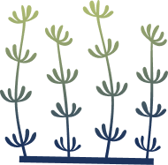
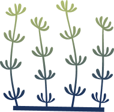
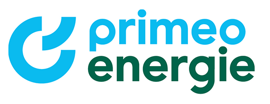

Algae Care
Mit Algae Care erlebst du spielerisch, wie dein Handeln die Algenwelt beeinflusst und warum ihr Schutz für das Meer entscheidend ist. Du siehst, wie sensibel das Ökosystem auf Veränderungen reagiert – und welche Rolle du dabei hast.
 

Warum sind Algen wichtig?
Viele Menschen, insbesondere Jugendliche der 7. bis 9. Schulstufe, haben oft nur wenig Wissen über Algen und die Ökosysteme, in denen sie eine zentrale Rolle spielen. Algen produzieren Sauerstoff, dienen als Lebensraum für zahlreiche kleine Meerestiere und sind essenziell für das Gleichgewicht unserer Ozeane. Doch der menschliche Einfluss, etwa durch Plastikmüll, steigende Wassertemperaturen oder Überdüngung, gefährdet diese empfindlichen Systeme massiv. Leider ist vielen nicht bewusst, dass Algen einen wesentlichen Beitrag zur Sauerstoffproduktion, zur CO₂-Bindung und zum Erhalt mariner Lebensräume leisten, und dass wir durch bewusste Entscheidungen im Alltag ihren Schutz aktiv beitragen können.
Unsere Mission: Bewusstsein schaffen!
Das interaktive Exponat Algae Care bringt Jugendlichen spielerisch näher, wie entscheidend ein gesundes Algen-Ökosystem ist. Ziel ist es, dass die Teilnehmenden nach der Nutzung des Exponats erklären können, warum ein Gleichgewicht in der Algenwelt notwendig ist – und welchen Einfluss unser Verhalten darauf hat. Dabei steht nicht nur das Lernen, sondern auch das kritische Reflektieren des eigenen Handelns im Mittelpunkt. Die Teilnehmer und Teilnehmerinnen sollen befähigt werden, bewusste Entscheidungen im Alltag zu treffen.
Die interaktive Spielerfahrung
Algae Care lädt Nutzerinnen und Nutzer dazu ein, spielerisch in die Rolle von Umwelteinflüssen zu schlüpfen und ein virtuelles Unterwasserökosystem zu beeinflussen. Mit 3D gedruckten Objekten wie einem Flugzeug, einem Korb für lokale Einkäufe oder einem Müllobjekt treffen sie Entscheidungen, die symbolisch für reales Verhalten wie Fernreisen, nachhaltigen Konsum oder Umweltverschmutzung stehen. Ein Objekt wird in das Exponat geworfen, der integrierte Scanner erkennt es und startet eine Simulation. Wird etwa das Flugzeug gewählt, steigt der CO₂-Wert, sichtbar auf der externen Anzeige links vom Bildschirm. In Echtzeit zeigt der zentrale Screen, wie sich das Algenwachstum, die Wasserqualität und das Meeresleben verändern. Ein animiertes Axolotl begleitet durch das Erlebnis, kommentiert Veränderungen und regt dazu an, das eigene Handeln zu hinterfragen.
Das Spiel hat zwei mögliche Ausgänge: Entweder kippt das Ökosystem – das Axolotl flieht und das Meer verödet – oder es bleibt durch kluge Entscheidungen im Gleichgewicht. So entsteht spielerisch ein tiefes Verständnis für ökologische Zusammenhänge und nachhaltige Entscheidungen.
In Game
Auf dem Bild ist der zentrale Bildschirm des Spiels zu sehen: Nachdem der Teilnehmende ein Objekt ausgewählt und in das Exponat geworfen hat, wird auf dem Bildschirm in Echtzeit sichtbar, wie sich die Wasserwelt und das Algenwachstum verändern. Dabei kann er beobachten, ob seine Entscheidung der Unterwasserwelt geholfen oder geschadet hat. Er wird angeregt, über die Auswirkungen seines Handelns nachzudenken und zu überlegen, was er beim nächsten Mal vielleicht anders machen würde, um das Ökosystem im Gleichgewicht zu halten.
Hardware
In einem stabilen Holzgehäuse steckt die Technik von Algae Care. Zentral ist der Bildschirm eingebaut, auf dem sich in Echtzeit die Veränderungen im Ökosystem zeigen. Links davon befinden sich externe Anzeigen für CO₂- und O₂-Werte, rechts ein Thermometer. Unter dem Bildschirm liegt ein offenes Fach mit 3D-gedruckten Objekten. Wird ein Objekt in den Trichter gelegt, erkennt der RFID-Scanner den Einflussfaktor. Danach kann der Hebel auf der rechten Seite gezogen werden, um die Simulation zu starten. So wird die Wirkung jeder Entscheidung direkt sichtbar und erlebbar.
Endbildschirm
Dieser Endbildschirm zeigt ein gesundes Ökosystem: Das Axolotl ist glücklich, die Unterwasserwelt in Balance. Dieser positive Abschluss erscheint, wenn die Spielenden achtsam gehandelt haben – mit stabilem CO₂-Wert, genug Sauerstoff und passender Temperatur. Bei zu hoher Belastung hingegen kippt das System: Die Wasserwelt wird zerstört und das Axolotl flieht. So macht Algae Care spürbar, wie sehr unser Handeln die Umwelt beeinflusst.
Unsere Lösung – Wissen spielerisch vermitteln
Algae Care bietet eine interaktive Erfahrung, die Jugendliche auf faszinierende Weise für den Schutz der Meere sensibilisiert. Anstatt sich mit trockener Theorie auseinanderzusetzen, erleben die Nutzer direkt, wie Umweltverschmutzung und Klimaveränderungen die Ozeane beeinflussen und lernen dabei, wie entscheidend Algen für die Gesundheit der Wasserumwelt sind. Die wichtigsten Merkmale unserer Lösung:
Interaktive Rückmeldungen: Durch Messwerte und das Verhalten des Axolotls erhalten die Jugendlichen visuelles Feedback, das ihnen zeigt, wie ihre Entscheidungen die Umwelt beeinflussen.
Nachhaltiger Lerneffekt: Rückmeldungen des Axolotls und sichtbare Veränderungen im Wasser, wie das Absterben von Algen, verdeutlichen die Auswirkungen der eigenen Handlungen. Externe Anzeigen machen den Einfluss auf das Ökosystem sichtbar und heben die Bedeutung von Algen für das ökologische Gleichgewicht hervor.
Persönliche Reflexion: Algae Care regt die Jugendlichen an, über ihr eigenes Handeln nachzudenken und motiviert sie, aktiv zum Umweltschutz beizutragen.
Technische Schlüsselbegriffe
- ProgrammierspracheJava
- Frontend StackJavaFX
- Backend StackPi4j
- DatenbankCSV
- PlattformRaspberry Pi 5
Kund:in

Primeo Energie
Weidenstrasse 27
4142 Münchenstein
www.primeo-energie.ch
Projektteam
Team
Tim Buser
Valentin Kuster
Adrian Sonderegger
Niklas Häfliger
Ben Böhler
Jasmin Gyger
Anja Zivkovic
Larissa Tharshan
Emirhan Karaca (nicht auf Bild)
Product Owner
Katja Pott
Flavia Brogle
Team Coach
Roswitha Dubach